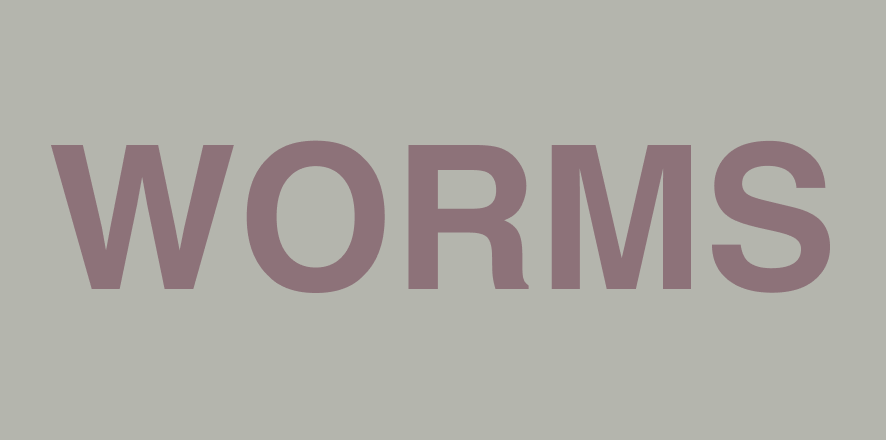

<!DOCTYPE html>
<html lang="en">
<head>
    <meta charset="UTF-8">
    <meta http-equiv="X-UA-Compatible" content="IE=edge">
    <meta name="viewport" content="width=device-width, initial-scale=1.0">
    <title>C A O I M H</title>
    <link rel="stylesheet" href="../_STYLES/normalise.css">
    <link rel="stylesheet" href="../_STYLES/typography.css">
    <script src="js/p5.min.js"></script>
    <script src="https://unpkg.com/p5.js-svg@1.1.1"></script>


</head>
<body>
<!---->
<script>
  let img;
  let cnv;
  let dot = 5;
  let dit = 3;
  
  let mover;
  let amt = 1;
  let bugs = [];
  let r = 2;
  let w;
  let frames = 2000;
  let mago = 0.5;
  let velo = 2;
  let multo = 2;
  let limito = 1;

  let sw = 2;

  
  
  function preload(){
    img = loadImage('images/worms.png');
  }
  
  
  function setup() {
    
    cnv = createCanvas(img.width, img.height);
    let newCanvasX = (window.width - img.width)/2;
    let newCanvasY = (window.height - img.height)/2;
    cnv.position(newCanvasX,newCanvasY);
    rectMode(CENTER);

    for(let col = 0; col < img.width; col += dot){
        for(let row = 0; row < img.height; row += dot){
          let c = img.get(col,row); 
          let huey = hue(c);
          let alphy = alpha(huey);
          if (huey > 340){ 
          for(let i = 0; i < amt; i++){
          bugs.push(new Mover(col,row, c));
          }
        }
      }
    }
  
    
  }
  
  
  
  
  
  function draw(){
    if(frameCount < frames){
    strokeWeight(sw);
    for(let i = 0; i < bugs.length; i++){
  
        bugs[i].update();
        bugs[i].edges();
  
        line(bugs[i].pos.x,bugs[i].pos.y,bugs[i].pxpy.x, bugs[i].pxpy.y);  
        bugs[i].pxpy.x = bugs[i].pos.x;
        bugs[i].pxpy.y = bugs[i].pos.y;
       
      } 

      sw -= 0.01;
      alphy -= 0.01;
    } 

    // Labels
    //push();
    //background(255);
    //noStroke();
    //rect(0,0,420,300);
    //fill(0);
    //textSize(16);
    //text('frameCount: ' + frameCount + '/' + frames, 10, 30);
    //text('magnitude: ' + mago, 10, 80);
    //text('mouse click to stop', 10, 130);
    //pop();
  }
  
  
  class Mover {
    
    constructor(x,y, kol){
      this.pos = createVector(x,y);
      this.vel = p5.Vector.random2D();
      this.vel.mult(random(1));
      this.pxpy = createVector(x,y);
      this.color = color(kol/2);
    }
    
    update(){
      //let mouse = createVector(mouseX, mouseY);
      //this.acc = p5.Vector.sub(mouse, this.pos);
      this.acc = p5.Vector.random2D();
      this.acc.mult(1);
      this.acc.setMag(4);
      
      this.vel.limit(1);
      this.vel.add(this.acc);
      this.pos.add(this.vel.x, this.vel.y);
      
      stroke( this.color );
      fill( this.color );
    }
    
    edges(){
      if(this.pos.y >= height){
         this.pos.y = height;
         this.vel.y *= -1;
         }
        if(this.pos.y <= 0){
         this.pos.y = 0;
         this.vel.y *= -1;
         }
        if(this.pos.x >= width){
         this.pos.x = width;
         this.vel.x *= -1;
         }
          if(this.pos.x <= 0){
         this.pos.x = 0;
         this.vel.x *= -1;
         }
    }
  
    
    addForce(force){
      this.vel.add(force);
    }
  
  }

  function mousePressed() { 
     //noLoop();
  }
  </script>
</body>
</html>